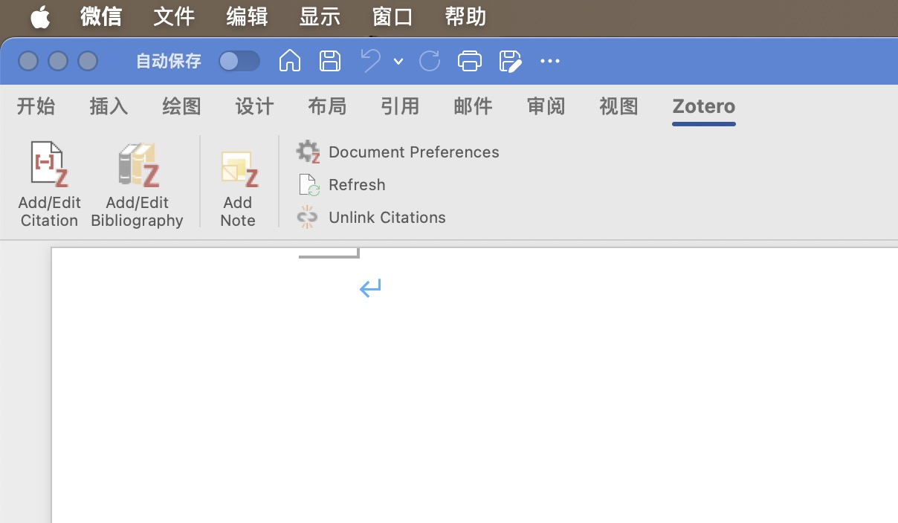
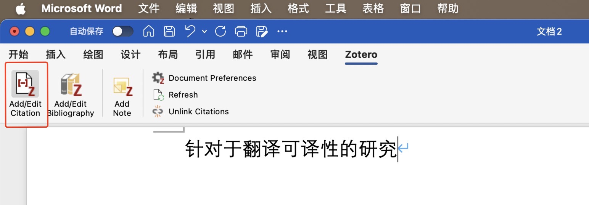
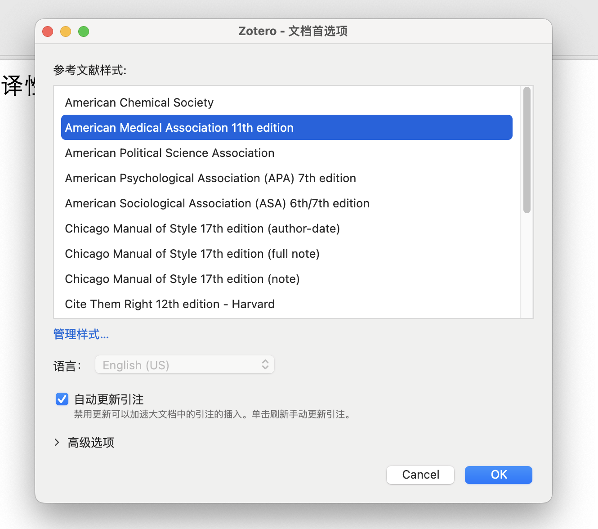
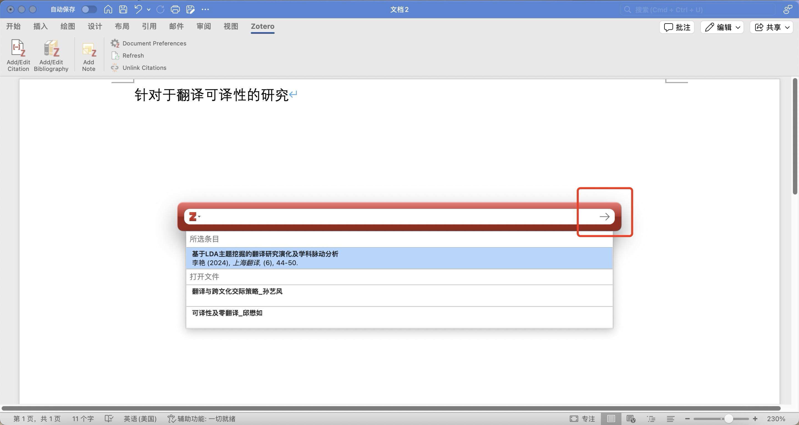
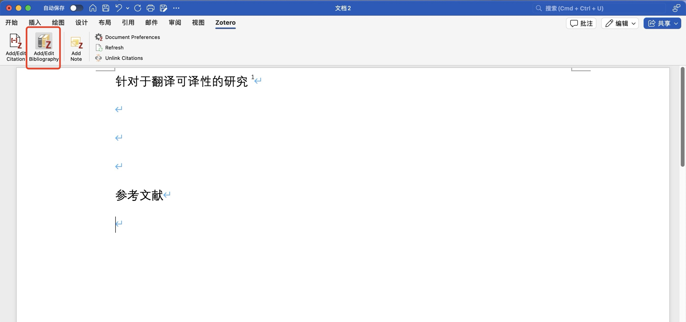
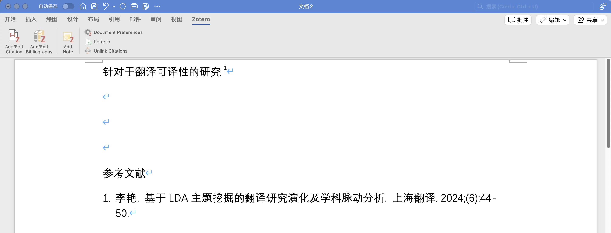

如何使用Zotero引用文献（Microsoft Word）
通过引用功能能够使文献管理软件在阅读和写作过程当中实现很好的交互，以提高文献管理效率。
-
确认您的Microsoft Word当中已嵌入Zotero插件（如图），如有问题可通过Troubleshooting_Cite文档查看解决办法。

-
在需要标记引用的位置点击此按钮（可在同一位置进行多次引用操作）。

-
在此对话框中对于引用所需格式进行选取。

-
在弹出的对话框中选出需要引用的文献，并点击右侧箭头进行确认。

-
在需要显示参考文献内容的位置点击图中按钮便可自动生成条目。

- 如需删除直接在正文引用处使用Delete键进行删除即可。
-
如需调整引用的位置
-
如果需要自动生成的参考文献条目中包含原网址可以进行如下操作。